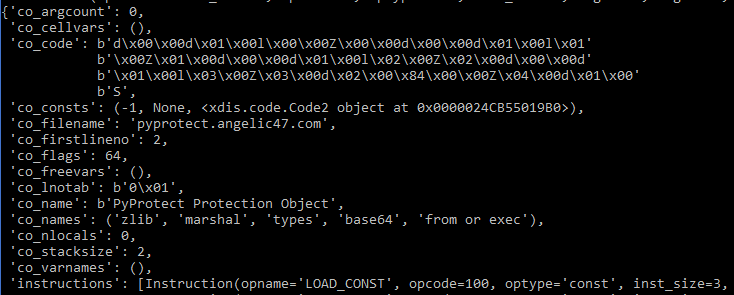

Preface
English is my first and only language, but that does not mean that I’m good at using it. I apologize if this post does not convey information clearly or concisely.
PyProtect is a Python 2.7 protector made by Angelic47. Its main feature is an obfuscated bytecode wrapper that prevents decompilers and disassemblers from working normally. The website also claims that it uses “… irreversible destructive techniques to prevent direct source capture” (Google Translated).
I recently came across something using PyProtect and decied to document my path towards writing an unpacker for it.
I should note that, while searching for existing information about PyProtect, I came across an extremely informative Chinese article written by Snowstar. Although this post has slightly different goals, it mostly rehashes and expands upon things mentioned in that article. As such, it would be no stretch to say that this post is primarily based on, and is perhaps a derivative work of, the article written by Snowstar.
Goals
I set some (perhaps unusual) goals/constraints for myself while working on this.
Do everything from Python 3*
All of the previous articles I’ve seen about python bytecode obfuscation require dropping down to the same interpreter version as the targeted bytecode so that the
dis,marshal, orflare-bytecode_graphmodules work. Because of this, I wanted to make sure that the techniques/libraries used in this article run in Python 3, regardless of the target bytecode version.Decompile each stage
Although this might not be possible for hand-written bytecode, the protection stages from PyProtect seem to be normally compiled python bytecode, with slight modifications to prevent decompilation. As such, it should be possible to get decompiled code from each protection stage, including the original python example code.
Run only known code.
Unlike the
Snowstararticle mentioned above, I wanted to avoid ever calling into unknown code objects, and instead reverse engineer the logic and reimplement it myself. This is to minimize the chances of malicious code running if somebody uses my code on an unknown PyProtected file.
* Except testing the PyProtected file.
Our starting point
To start, we will be using a known example script that uses an import, class, class method, function, etc to see how PyProtect manipulates things.
# -*- coding: utf-8 -*-
import random
class Human(object):
def __init__(self, name, age):
self.name = name
self.age = age
def have_birthday(self):
self.age += 1
print("Happy birthday {}!".format(self.name))
def is_adult(human):
return human.age > 21
# Make some humans.
humans = [
Human("Aarav", 17),
Human("Jane", 19),
Human("Yoshi", 27),
Human("Günay", 20),
Human("Cody", 17)
]
# Then let one die each year.
for i in xrange(5):
for human in humans:
human.have_birthday()
# Randomly kill one.
human = random.choice(humans)
classification = "adult" if is_adult(human) else "minor"
print("{} died as a {} at the age of {}.".format(human.name, classification, human.age))
humans.remove(human)
After passing that through PyProtect, we are provided a .pyc file that still runs normally in the CPython 2.7 interpreter.
If we take a quick look at the PyProtected file with a hex editor, we’ll see that we now have a neat little header.
Or if formatted properly (GBK / CP936 encoding):
==========================================================================================
本文件由PyProtect加密 - PyProtect: 在线Python文件加密器
https://pyprotect.angelic47.com
==========================================================================================
Further, all traces of our original variable names are gone as well.
Stage 1
First off, we try to run uncompyle6 to verify that PyProtect has actually done anything to prevent it from working.

If we look at the crash, we can see the error is actually coming from xdis, the python-version-agnostic sister project of uncompyle6 that provides stable dis and marshal functionally across Python versions.
To verify that this is an problem dissassembling with xdis, rather than an issue with uncompyle6, we try to disassemble the code ourselves, and we’ll end up getting the same error:
from xdis.load import load_module
import xdis, xdis.main
(version, timestamp, magic_int, co2, pypy, source_size) = load_module('my_test_script.pyc')
xdis.main.disco(version, co2, timestamp)
 Now that we know this is an issue within
Now that we know this is an issue within xdis, we can start looking at the bytecode.
The co2.co_code variable contains the bytecode that the interpreter will use upon starting. So for this .pyc to be runnable, at least the first instruction should be valid, so let’s check that.
from xdis.load import load_module
from xdis.bytecode import get_instructions_bytes
import xdis, xdis.main
(version, timestamp, magic_int, co2, pypy, source_size) = load_module('my_test_script.pyc')
# Get the opcode data for this bytecode version
opc = xdis.main.get_opcode(version, pypy)
# Take one instruction from the python generator.
inst = next(get_instructions_bytes(co2.co_code, opc))
print('{}: {} {}'.format(inst.offset, inst.opname, inst.argval))
0: JUMP_FORWARD 44
Yep, that looks like like a normal instruction. How about the next few?
0: JUMP_FORWARD 44
3: DELETE_GLOBAL 47658
6: <215> 4248
9: ROT_TWO None
10: <182> 64653
13: <191> 51992
16: <249> 39482
19: <224> 24838
22: <175> 54593
25: <190> 50426
Those look less normal (and might even crash in xdis when trying to disassemble them, depending on what data has been placed there).
What happened here is that the bytecode has been prefixed with a JUMP_FORWARD instruction pointing to the original first instruction, and some junk data to mess with the disassembler. Because xdis uses a linear sweep algorithm (that is it expects each instruction to follow the previous, regardless of control flow instructions), it occasionally breaks when the junk data can be disassembled as a real instruction, but which accesses something invalid (e.g. a very high const index which doesn’t exist in co2.co_consts). This is a common anti-disassembly technique for all linear sweep disassemblers.
To work around this, we could try to delete the first n bytes up to the jump target offset, but that will shift all of the bytecode offsets backwards, breaking any instrutions that use an absolute offset. Instead, a better option is to replace the bytes with NOP instructions so that the offsets stay the same.
from xdis.load import load_module
from xdis.bytecode import get_instructions_bytes
import xdis, xdis.main
def nop_start_jump_junk(co, opc):
jmp_inst = next(get_instructions_bytes(co.co_code, opc))
target = jmp_inst.argval
# Make a copy of the co_code and copy the bytecode over,
# replacing everything up to the jump target with `NOP` instructions.
fixed_code = bytearray(len(co.co_code))
for i in range(len(co.co_code)):
if i < target:
fixed_code[i] = opc.opmap['NOP']
else:
fixed_code[i] = co.co_code[i]
# Set fixed code back on co2.
co.co_code = fixed_code
co.freeze()
(version, timestamp, magic_int, co2, pypy, source_size) = load_module('my_test_script.pyc')
opc = xdis.main.get_opcode(version, pypy)
nop_start_jump_junk(co2, opc)
inst_gen = get_instructions_bytes(co2.co_code, opc)
for i in range(175):
inst = next(inst_gen)
print('{}: {} {}'.format(inst.offset, inst.opname, inst.argval))
After doing that, we now get normal looking instructions after the NOPs until around ~339, where it seems to have another anti-disassembly jump with some junk unary ops and constantly repeating DELETE_SUBSCR.
0: NOP None
1: NOP None
2: NOP None
... snip ...
41: NOP None
42: NOP None
43: NOP None
44: SETUP_EXCEPT 308
47: LOAD_CONST 0
50: LOAD_CONST 1
53: IMPORT_NAME 0
56: STORE_NAME 0
59: LOAD_CONST 0
62: LOAD_CONST 1
... snip ...
314: PRINT_ITEM None
315: PRINT_NEWLINE None
316: JUMP_FORWARD 320
319: END_FINALLY None
320: LOAD_NAME 22
323: STORE_NAME 21
326: DELETE_NAME 21
329: LOAD_CONST 1
332: RETURN_VALUE None
333: EXTENDED_ARG 0
336: JUMP_FORWARD 1646 # <-- Jump far beyond of all these `DELETE_SUBSCR`.
339: UNARY_CONVERT None
340: UNARY_POSITIVE None
341: UNARY_CONVERT None
342: UNARY_POSITIVE None
343: DELETE_SUBSCR None
344: DELETE_SUBSCR None
345: DELETE_SUBSCR None
346: DELETE_SUBSCR None
347: DELETE_SUBSCR None
348: DELETE_SUBSCR None
349: DELETE_SUBSCR None
350: DELETE_SUBSCR None
351: DELETE_SUBSCR None
352: DELETE_SUBSCR None
353: DELETE_SUBSCR None
However, if we print some of the data starting at ~339, we’ll find that the data actually seems to be real text.
>>> print(co2.co_code[339:350])
bytearray(b'\r\n\r\n=======')
Another quick look in our hex editor again and we see that is actually the neat little header we saw at the beginning.
By abusing this known header value, we easily find the second anti-disassembly jump and replace it with NOP instructions also:
from xdis.load import load_module
from xdis.bytecode import get_instructions_bytes, instruction_size
import xdis, xdis.main
def nop_jump_junk(co, opc):
# Get the first jump target.
first_jump_inst = next(get_instructions_bytes(co.co_code, opc))
first_jump_target = first_jump_inst.argval
# Abuse the text header to find the second jump.
header_start_target = co.co_code.find(b'\r\n\r\n========')
jump_forward_inst_size = instruction_size(opc.opmap['JUMP_FORWARD'], opc)
second_jump_start = header_start_target-jump_forward_inst_size # Offset to the start of the JUMP_FORWARD, right before the header.
second_jump_inst = next(get_instructions_bytes(co.co_code[second_jump_start:second_jump_start+jump_forward_inst_size], opc))
second_jump_target = second_jump_start + second_jump_inst.argval # JUMP_FORWARD is relative, so we need to add the offset.
# Make a copy of the co_code and replace the jump and junk bytes with NOP.
fixed_code = bytearray(len(co.co_code))
for i in range(len(co.co_code)):
if (i < first_jump_target) or (i >= second_jump_start+jump_forward_inst_size and i < second_jump_target) :
fixed_code[i] = opc.opmap['NOP']
else:
fixed_code[i] = co.co_code[i]
# Set fixed code back on co.
co.co_code = fixed_code
co.freeze()
(version, timestamp, magic_int, co2, pypy, source_size) = load_module('my_test_script.pyc')
opc = xdis.main.get_opcode(version, pypy)
nop_jump_junk(co2, opc)
inst_gen = get_instructions_bytes(co2.co_code, opc)
for inst in inst_gen:
print('{}: {} {}'.format(inst.offset, inst.opname, inst.argval))
Now we can fully disassemble our bytecode without any crashes.
326: DELETE_NAME 21
329: LOAD_CONST None
332: RETURN_VALUE None
336: JUMP_FORWARD 1646
339: NOP None
340: NOP None
341: NOP None
342: NOP None
...
1646: NOP None
With this clean disassembly, we can now find that the second anti-disassembly jump actually goes to a single NOP at the end of the co_code, so we could just delete the second jump and everything after it if we desired.
Unfortunately, however, we still cannot decompile it.
import uncompyle6
uncompyle6.main.decompile(version, co2, sys.stdout)
Parse error at or near `None' instruction at offset -1
For reasons I don’t fully understand, this seems to be caused by uncompyle6 breaking on NOP instructions. In fact, just appending a single NOP to the end of your bytecode will break uncompyle6.
As such, we will do something slightly more complex to fully remove the NOP instructions from the bytecode:
- Patch the anti-disassembly jump instruction and junk data with
NOPs, (entirely deleting the second one). - Use
xdisto disassemble each instruction. - Copy over each instruction that isn’t a
NOP, while fixing any instruction with an absolute offset. - Reassemble the instructions using
xasm.
(Warning: the following code to update the absolute instruction offsets would break if a NOP instruction got deleted between a relative instruction and it’s target offset. Something more advanced, like flare-bytecode_graph, would be required to handle that, although you would need to update it to Python3 and xdis/xasm)
from xdis.load import load_module
from xdis.bytecode import get_instructions_bytes, instruction_size
from xasm.assemble import Assembler, Instruction, create_code
import xdis, xdis.main
import uncompyle6
import sys
def nop_jump_junk(co, opc):
# Get the first jump target.
first_jump_inst = next(get_instructions_bytes(co.co_code, opc))
first_jump_target = first_jump_inst.argval
# Abuse the text header to find the second jump.
header_start_target = co.co_code.find(b'\r\n\r\n========')
has_pyprotect_header = header_start_target != -1
# Get the start of the JUMP_FORWARD, right before the header.
jump_forward_inst_size = instruction_size(opc.opmap['JUMP_FORWARD'], opc)
second_jump_start = header_start_target-jump_forward_inst_size
# Go over the existing code and decide whether to copy each byte.
fixed_code = bytearray()
for i in range(len(co.co_code)):
if (i < first_jump_target):
# Replace the first anti-disassembly jump with NOPs
fixed_code.append(opc.opmap['NOP'])
elif has_pyprotect_header and (i >= second_jump_start):
# Don't copy the second AD jump or anything after it.
pass
else:
# Copy everything else.
fixed_code.append(co.co_code[i])
# Set fixed code back on co.
co.co_code = fixed_code
co.freeze()
def remove_nops(co, opc, version):
asm = Assembler(str(version))
asm.code = co
asm.code.instructions = []
# Disassemble the original instructions,
# ignore if NOP, recalculate if absolute jump
# then append them to our assembler.
removed_nop_count = 0
cur_offset = 0
for inst in get_instructions_bytes(asm.code, opc):
if inst.opname is 'NOP':
removed_nop_count += 1
continue
# Recalculate absolute jump arg.
arg = inst.arg
if inst.optype is 'jabs':
joff = inst.arg - inst.offset
arg = cur_offset + joff
# Create a new `xasm` Instruction.
new_inst = Instruction()
new_inst.opcode = inst.opcode
new_inst.arg = arg
new_inst.offset = cur_offset
new_inst.line_no = 0
# Add the instruction to the assembler.
asm.code.instructions.append(new_inst)
cur_offset += inst.inst_size
code = create_code(asm, [], [])
# HACK/FIX: xasm's `create_code` makes co_code a str on opcode version < 3,
# when it should _probably_ be checking the interpreter version instead.
# uncompyle6 requires this to be bytes-like, so we convert it.
if sys.version_info > (3, 0, 0):
code.co_code = bytes([ord(c) for c in code.co_code])
return code
(version, timestamp, magic_int, co2, pypy, source_size) = load_module('my_test_script.pyc')
opc = xdis.main.get_opcode(version, pypy)
nop_jump_junk(co2, opc)
co2 = remove_nops(co2, opc, version)
uncompyle6.main.decompile(version, co2, sys.stdout)
Which now gives us this wildly invalid output:
# uncompyle6 version 3.5.0
# Python bytecode 2.7
# Decompiled from: Python 3.7.1 (v3.7.1:260ec2c36a, Oct 20 2018, 14:57:15) [MSC v.1915 64 bit (AMD64)]
# Embedded file name: pyprotect.angelic47.com
try:
import sys, zlib, base64, marshal
raise lambda from = sys._getframe().f_code
try break = raise lambda from.co_code
global && isdecoded + 8 = len(try break)
in in && = b'\x0bcy\x0e|\xef\xbb\xeeY2\xe3\xd8\x8e\xcdy\xaf\xa9n\xca\xa4d+\xc4\x1b\x9c\xed\xbb\xa7$\xdb\xd6\x8b!\xbd\xf6d\x9d\'\xef\xfd%\x8b\x11Y\x0b.N\x1c476ua=S9ht3\x149F>mO[Xc\x029J44I\x0bDVX7c/a8>bk\x0cHw.3J9fY\x1cvC\x18LA\xfaQR,<q/t7N5V&43+d7?Br\x150Q\xe9@+=SFUCO9Op/[+R^b\xb7s7m;q4S+6u+\x15\x069\\%b\x0677\x02#f\xe6;zodGr/{v6w1\x03it\\(u\x14St\nnQa\xeaDb\nC64Je\x01^jT|ySV\xf2Gl+\xfaLeZ\x1dfh\x15\xefnc\'zh\x07fZ\x00FC!IrNEp\x1blz4AR\xea2Y\xc1So\xc5m+\x1bei\'fc\x00U1c>5{H&Oh\xcdGv\x131NM\x00\x02eK\x02gc\x10FRbMM\x0fJF0^Q"OFkPX\x1e7|PuCVT`7q\x0b\x1aGVh\x13er9C51"G\x0enr\x1a\xd0L6 OWoe:>uq\x08mR[\x7f\x0esJ|P\x16\\\x04oKIR\x0bXZ~\x05kJQndoY|rkXGy\tzx\x0c[\tZVNR\x0bNyhl\x0fV_k{\x08\x0c\tN\x05IE|NJ\x0f\\Gm\x05mGqu|RnH\x7f[\t[|\x0f\x05T\x0bEnF\xd2\xe4\xa0\xad\xf4\xca\x85\xba\x1dNi>9?)\r<\x84\x97\xf4\x98bZW64$\n\x07_,\t\x1cc\x13\x87\xa2\xa5\xbcdJD2\x17*\xf6\xbc\xff\x9f\xd4\xea\x86\xe4\xa1\x82Tx\t8B;FW[@\x06\x168\x1f*<]70CQ\n3\x14\t&LCsc)\x0c[BePkwV{MzL\x0fGxvRQ\x0bHHIVxR\x0c\x0f[\x04vm\x0cOe\x04ix\\X\x16N[~\x0cpW\x08KLdwyUQ\x0eDQ\x08_koM\\qpZj\x12eL\x05\ri\rI\x0b\tg\tpRRQUQqeX\x04z\rT\x05R={>n\xb9\xf8`(]\x0c\xad\xbc\xa5\xf1\xd1\x07v\x92\x10\x18\x8d\x10\xc6\x910v\xc5B\xda\xe2\xb7\x18\x98\xf4\xce\xc5=\x0en,\x11\xa0\xcf\x96\x99i;\x0e\xcc\xf7[\tF\x99\xa4\x996\xfesp\x81\x8c\x9cS\xaf\xb7\xfd\xcc\x0f\xe2\xdc\x96\x19\x07\x13\xca\x8b\xdc"w}E\xebs\xf9\xbc8\xa1\xb3=\x07t\xea\x03\xc2H\xa8\x82\xaa\xcd\xd9\x7f\xb2.\xb2\xb3_J\x975xz:\x01\xe5\xef\xa9\nl\x81\xa9\xf2\x84\xd8~#1\x8b\x9a[r\xa3\xa2\xddO\xe2~f\x93w\xb1R\xe0L\xd3e4\xf0\x01\xdc?\xb5n\x9c\xde]$p\xf79Z\x92\xc0z\x16\x8b?\xdaSr\x90\xb20\x96\xaa\x95\x8d\x06\xf4I\r|\x8d\xeb\x84u5\xa1F\xa5O{\xc7\xcd\xae\xf7\x9c\xc7W!9\xf7\x9b\x10\x16\xa7\xe9\xdc\xb5\xdaE\xde\x05<\xa1\xfe*\xba\x94\x93&D\x84\xe6f\xd8Pa\xb3U\xeb\x89\xe7\xbd\x90\xc8+\xb8\xd7\x85\xed\xd5\'h\x82\xbfz!\xe7\x04p\x12y\x1b\xc8O\xe3\xa6\x99\xe4\xfb\x94\x7f\xe1\x96F%.8\xb0-l-^&(1+\xb1\x9f^r\xd5\x82,\x97\xdc\xb4\xfe\x1c\x89l\xaf\x1b\x17\x08v\x080\x92\xfd\xe7\xc7j\xf6Urg\xe4\xb4\x8f\xf4C!\xf3\xf36F\xc5<_Y\xb3\xbe\x12a\x9b\x9b\xe9\x9c\x8c\x97\x93#\xd0\xec\x87\x7f\xd1\xea(\x94\x98\xa4\xc0\x1b\x04\xd0,\xba$\x0e\xfbd\xc05P\x17\xbe(6"\xf7\xdd\xb2\xa5o\x9f\xdc\xa0-@B\x87\x9cL\xf9\xfa\x8f\xcb\xf5)\xd0H\x84_vB\xef\x1be\xb75\xc4\xa4\x7fK\xd5\xe4\xea\x86\x18\xec\xcf!M\x04r\x96O\xe1\x17\xb5\xf0\x192\xa5F\xfe\x01\xca\xa4\xa8\xc4I\x175\xa7\x9cW:\x0baoM\x16\xbe\xb1\x8a\xec\xbe\xe7\x85\xbfK3u\xa8\x80\xe5\xa2\x19\x17\t\x17\xa1\xf1A\xd5j\x18w{\xee\x8f\xb45\xdd0}\xb92\x9e\x8f\x87^\xdc\xf6\xa4>\xf6\xfe\r\x0e\x9c\xc8j6\xee\xdc\xe4%\xd0dTo\xc0\x87j\xe1\x0c}\xad\xc4B:\xa1\xaf\xc7\xcc9\xac0$p\xed!\xb7\xd2\xea\xdc\x86\xees\x92\xf8\xbc\x89H:\x17\xaeYcgq\x9c\xf5$\xa8\t\xee~/5\xf9@8q\x97]\x8dOM\xcc\xc3\x14\x108h\xab}\xec\xaa2\xfc\tS\x1e\xe8\x97;\x15`\xa1<\x13\x7f\xfd\xe1\xd6\xb2\x0b\x13r\xdd\xe6\xa3S\xa7\tU\xd0\x95\xcc\xb1\xefz\x97\xc2\xed\xd1\x1eVw\t\xe4\xcb\xe6\xc9\x84B\x8b\x7fw\xa4\xbb8;\xd9\xa1<\x91Z\x0b\x18\x08\xebdgY\xed8OY7\xb4\x98\x0c5\x9b+V\x806\xa7\x91\xc8\x7fn\xe5\xeb\x7f\xab\xe3\x1f\xed\xff\x8b\x7f\x1ad\xf1\xd9\xd3\x03k\x85e\xa5\xe3F\x05\x0f\xbfz=\xa0\x0b\xc5\xec\x94X\xd3\x1a\x1b\x19\x82\xbe3*\xc7\x04\xd3\xda\xb8\xe0\xde\x88\xff\x83\xa0eh\x10\xa2\xe9D\x97\x1du\xb8\xdaS\x03\x083\xc8\x80nS\xccz\x8b6z\xef\xe7>q\x0e\xf9_\x14S\xcb\x9b\x14\xab\t\xc8\xd8e \xad%\xa2\x84f\xf1\x08R\x88\x9f\x9760J\\\x07\xb3\x01l\x01\x94U\x0cUs4\x1b\x08\xe8\x7f\x07\xecr$\xd0%\x8c\xb5\xe8\x03\xa8\x95\xa8~\x1a\xff#|\xa6\rQg\xee\xe7\x90\x08\xda,oD\x91\x88wr\xf5\x1a\xa1\xa3\xb2\xa0\xa4\xf6F\x9d\xa0 \x95\x80\x86\x8b\xef\x98\x8e\xb0\xc0\xded\xf6\x0f\xa1\xc9\x8b\n\x10\x8d\x8b\xcb!\x9e\xf2\x05\x94`U\xe4\xe6\xc8\x88Kk\xeb\x1f\x98,|]\x9c\xa2\x9d\xcc\x15\x93\xae\x08\x06\x88t\x8ez^3\xaf\xd0\xf50\x11i\xa2=\xca\xb4/\xa4\x1b2.AyM\xc3Q\'\xbdk\xfb\xec\x9aq\xb8y\x80{\xd3\xf9\xb8\x0b\x841\xf1\x15\xa0I\xbbG\x824\xe6;p\xd1\xa5n\xc8\xb8O\xa3TK\x88\xec\xca\xb3(\x7f\x16z\xd5\xa6\x08kQ\xb6\xce\xe2\t\xa0\x17\xd4('
yield exec = len(in in &&)
++ + dict exec except = ''
for lambda if && isdecoded from in range(0, yield exec):
++ + dict exec except += chr(ord(in in &&[lambda if && isdecoded from]) ^ ord(try break[(lambda if && isdecoded from % global && isdecoded + 8)]))
++ + dict exec except = marshal.loads(zlib.decompress(base64.b64decode(++ + dict exec except)))
exec ++ + dict exec except
exec from or exec(raise lambda from)
del try break
del global && isdecoded + 8
del in in &&
del yield exec
del ++ + dict exec except
del lambda if && isdecoded from
del raise lambda from
del from or exec
except:
print 'An uncorrectable error has occurred while loading module.'
from or exec = True
del from or exec
If we print the co_names value before decompiling, the problem becomes more apparent.
>>> print(co2.co_names)
('sys', 'zlib', 'base64', 'marshal', '_getframe', 'f_code', 'raise lambda from', 'co_code', 'try break', 'len', 'global && isdecoded + 8', 'in in &&', 'yield exec', '++ + dict exec except', 'range', 'lambda if && isdecoded from', 'chr', 'ord', 'loads', 'decompress', 'b64decode', 'from or exec', 'True')
Our local variable names have been replaced with gibberish python syntax (even with spaces!). We can clean this up by replacing any name that is a python keyword or contains a space.
import keyword
names = list(co2.co_names)
for i, name in enumerate(co2.co_names):
if (name in keyword.kwlist) or (' ' in name):
names[i] = 'var{}'.format(i)
co2.co_names = tuple(names)
Which finally gives us a readable decompilation.
# uncompyle6 version 3.5.0
# Python bytecode 2.7
# Decompiled from: Python 3.7.1 (v3.7.1:260ec2c36a, Oct 20 2018, 14:57:15) [MSC v.1915 64 bit (AMD64)]
# Embedded file name: pyprotect.angelic47.com
try:
import sys, zlib, base64, marshal
var6 = sys._getframe().f_code
var8 = var6.co_code
var10 = len(var8)
var11 = b'\x0bcy\x0e|\xef\xbb\xeeY2\xe3\xd8\x8e\xcdy\xaf\xa9n\xca\xa4d+\xc4\x1b\x9c\xed\xbb\xa7$\xdb\xd6\x8b!\xbd\xf6d\x9d\'\xef\xfd%\x8b\x11Y\x0b.N\x1c476ua=S9ht3\x149F>mO[Xc\x029J44I\x0bDVX7c/a8>bk\x0cHw.3J9fY\x1cvC\x18LA\xfaQR,<q/t7N5V&43+d7?Br\x150Q\xe9@+=SFUCO9Op/[+R^b\xb7s7m;q4S+6u+\x15\x069\\%b\x0677\x02#f\xe6;zodGr/{v6w1\x03it\\(u\x14St\nnQa\xeaDb\nC64Je\x01^jT|ySV\xf2Gl+\xfaLeZ\x1dfh\x15\xefnc\'zh\x07fZ\x00FC!IrNEp\x1blz4AR\xea2Y\xc1So\xc5m+\x1bei\'fc\x00U1c>5{H&Oh\xcdGv\x131NM\x00\x02eK\x02gc\x10FRbMM\x0fJF0^Q"OFkPX\x1e7|PuCVT`7q\x0b\x1aGVh\x13er9C51"G\x0enr\x1a\xd0L6 OWoe:>uq\x08mR[\x7f\x0esJ|P\x16\\\x04oKIR\x0bXZ~\x05kJQndoY|rkXGy\tzx\x0c[\tZVNR\x0bNyhl\x0fV_k{\x08\x0c\tN\x05IE|NJ\x0f\\Gm\x05mGqu|RnH\x7f[\t[|\x0f\x05T\x0bEnF\xd2\xe4\xa0\xad\xf4\xca\x85\xba\x1dNi>9?)\r<\x84\x97\xf4\x98bZW64$\n\x07_,\t\x1cc\x13\x87\xa2\xa5\xbcdJD2\x17*\xf6\xbc\xff\x9f\xd4\xea\x86\xe4\xa1\x82Tx\t8B;FW[@\x06\x168\x1f*<]70CQ\n3\x14\t&LCsc)\x0c[BePkwV{MzL\x0fGxvRQ\x0bHHIVxR\x0c\x0f[\x04vm\x0cOe\x04ix\\X\x16N[~\x0cpW\x08KLdwyUQ\x0eDQ\x08_koM\\qpZj\x12eL\x05\ri\rI\x0b\tg\tpRRQUQqeX\x04z\rT\x05R={>n\xb9\xf8`(]\x0c\xad\xbc\xa5\xf1\xd1\x07v\x92\x10\x18\x8d\x10\xc6\x910v\xc5B\xda\xe2\xb7\x18\x98\xf4\xce\xc5=\x0en,\x11\xa0\xcf\x96\x99i;\x0e\xcc\xf7[\tF\x99\xa4\x996\xfesp\x81\x8c\x9cS\xaf\xb7\xfd\xcc\x0f\xe2\xdc\x96\x19\x07\x13\xca\x8b\xdc"w}E\xebs\xf9\xbc8\xa1\xb3=\x07t\xea\x03\xc2H\xa8\x82\xaa\xcd\xd9\x7f\xb2.\xb2\xb3_J\x975xz:\x01\xe5\xef\xa9\nl\x81\xa9\xf2\x84\xd8~#1\x8b\x9a[r\xa3\xa2\xddO\xe2~f\x93w\xb1R\xe0L\xd3e4\xf0\x01\xdc?\xb5n\x9c\xde]$p\xf79Z\x92\xc0z\x16\x8b?\xdaSr\x90\xb20\x96\xaa\x95\x8d\x06\xf4I\r|\x8d\xeb\x84u5\xa1F\xa5O{\xc7\xcd\xae\xf7\x9c\xc7W!9\xf7\x9b\x10\x16\xa7\xe9\xdc\xb5\xdaE\xde\x05<\xa1\xfe*\xba\x94\x93&D\x84\xe6f\xd8Pa\xb3U\xeb\x89\xe7\xbd\x90\xc8+\xb8\xd7\x85\xed\xd5\'h\x82\xbfz!\xe7\x04p\x12y\x1b\xc8O\xe3\xa6\x99\xe4\xfb\x94\x7f\xe1\x96F%.8\xb0-l-^&(1+\xb1\x9f^r\xd5\x82,\x97\xdc\xb4\xfe\x1c\x89l\xaf\x1b\x17\x08v\x080\x92\xfd\xe7\xc7j\xf6Urg\xe4\xb4\x8f\xf4C!\xf3\xf36F\xc5<_Y\xb3\xbe\x12a\x9b\x9b\xe9\x9c\x8c\x97\x93#\xd0\xec\x87\x7f\xd1\xea(\x94\x98\xa4\xc0\x1b\x04\xd0,\xba$\x0e\xfbd\xc05P\x17\xbe(6"\xf7\xdd\xb2\xa5o\x9f\xdc\xa0-@B\x87\x9cL\xf9\xfa\x8f\xcb\xf5)\xd0H\x84_vB\xef\x1be\xb75\xc4\xa4\x7fK\xd5\xe4\xea\x86\x18\xec\xcf!M\x04r\x96O\xe1\x17\xb5\xf0\x192\xa5F\xfe\x01\xca\xa4\xa8\xc4I\x175\xa7\x9cW:\x0baoM\x16\xbe\xb1\x8a\xec\xbe\xe7\x85\xbfK3u\xa8\x80\xe5\xa2\x19\x17\t\x17\xa1\xf1A\xd5j\x18w{\xee\x8f\xb45\xdd0}\xb92\x9e\x8f\x87^\xdc\xf6\xa4>\xf6\xfe\r\x0e\x9c\xc8j6\xee\xdc\xe4%\xd0dTo\xc0\x87j\xe1\x0c}\xad\xc4B:\xa1\xaf\xc7\xcc9\xac0$p\xed!\xb7\xd2\xea\xdc\x86\xees\x92\xf8\xbc\x89H:\x17\xaeYcgq\x9c\xf5$\xa8\t\xee~/5\xf9@8q\x97]\x8dOM\xcc\xc3\x14\x108h\xab}\xec\xaa2\xfc\tS\x1e\xe8\x97;\x15`\xa1<\x13\x7f\xfd\xe1\xd6\xb2\x0b\x13r\xdd\xe6\xa3S\xa7\tU\xd0\x95\xcc\xb1\xefz\x97\xc2\xed\xd1\x1eVw\t\xe4\xcb\xe6\xc9\x84B\x8b\x7fw\xa4\xbb8;\xd9\xa1<\x91Z\x0b\x18\x08\xebdgY\xed8OY7\xb4\x98\x0c5\x9b+V\x806\xa7\x91\xc8\x7fn\xe5\xeb\x7f\xab\xe3\x1f\xed\xff\x8b\x7f\x1ad\xf1\xd9\xd3\x03k\x85e\xa5\xe3F\x05\x0f\xbfz=\xa0\x0b\xc5\xec\x94X\xd3\x1a\x1b\x19\x82\xbe3*\xc7\x04\xd3\xda\xb8\xe0\xde\x88\xff\x83\xa0eh\x10\xa2\xe9D\x97\x1du\xb8\xdaS\x03\x083\xc8\x80nS\xccz\x8b6z\xef\xe7>q\x0e\xf9_\x14S\xcb\x9b\x14\xab\t\xc8\xd8e \xad%\xa2\x84f\xf1\x08R\x88\x9f\x9760J\\\x07\xb3\x01l\x01\x94U\x0cUs4\x1b\x08\xe8\x7f\x07\xecr$\xd0%\x8c\xb5\xe8\x03\xa8\x95\xa8~\x1a\xff#|\xa6\rQg\xee\xe7\x90\x08\xda,oD\x91\x88wr\xf5\x1a\xa1\xa3\xb2\xa0\xa4\xf6F\x9d\xa0 \x95\x80\x86\x8b\xef\x98\x8e\xb0\xc0\xded\xf6\x0f\xa1\xc9\x8b\n\x10\x8d\x8b\xcb!\x9e\xf2\x05\x94`U\xe4\xe6\xc8\x88Kk\xeb\x1f\x98,|]\x9c\xa2\x9d\xcc\x15\x93\xae\x08\x06\x88t\x8ez^3\xaf\xd0\xf50\x11i\xa2=\xca\xb4/\xa4\x1b2.AyM\xc3Q\'\xbdk\xfb\xec\x9aq\xb8y\x80{\xd3\xf9\xb8\x0b\x841\xf1\x15\xa0I\xbbG\x824\xe6;p\xd1\xa5n\xc8\xb8O\xa3TK\x88\xec\xca\xb3(\x7f\x16z\xd5\xa6\x08kQ\xb6\xce\xe2\t\xa0\x17\xd4('
var12 = len(var11)
var13 = ''
for var15 in range(0, var12):
var13 += chr(ord(var11[var15]) ^ ord(var8[(var15 % var10)]))
var13 = marshal.loads(zlib.decompress(base64.b64decode(var13)))
exec var13
exec var21(var6)
del var8
del var10
del var11
del var12
del var13
del var15
del var6
del var21
except:
print 'An uncorrectable error has occurred while loading module.'
var21 = var22
del var21
Interesting! The next stage has actually been zlib compressed, base64 encoded, then XOR’d with the current function’s (original) bytecode.
By pulling the obfuscated stage2 data directly out of the co2.co_consts, we can easily replicate this logic and get our stage2 code object:
# TODO: Not sure it the const index is always the same,
# may need to grab this by finding the largest const.
stage2_enc_code = co2.co_consts[2]
stage2_out_code = bytearray()
for i in range(len(stage2_enc_code)):
stage2_out_code.append(stage2_enc_code[i] ^ original_co_code[i % len(original_co_code)])
stage2_co2 = xdis.marsh.loads(zlib.decompress(base64.b64decode(stage2_out_code)), version)
Stage 2
Another stage, let’s start from the beginning.
First things first, does this code object decompile normally? No.
So let’s take a look at the first instruction(s):
0: JUMP_FORWARD 40
3: DELETE_GLOBAL 57417
6: BUILD_CLASS None
7: DUP_TOP None
8: INPLACE_ADD None
9: <160> 10939
12: END_FINALLY None
13: SLICE+3 None
14: <157> 13350
17: <49> None
18: <178> 27297
That looks familiar. Let’s just try reusing our existing jump+junk NOP replacement and offset fixing code.
# Replace the jump+junk anti-disassembler instructions with NOP.
nop_jump_junk(stage2_co2, opc)
# Remove the NOP's and recalculate the offsets.
stage2_co2 = remove_nops(stage2_co2, opc, version)
uncompyle6.main.decompile(2.7, stage2_co2, sys.stdout)
Oh, that worked!
# uncompyle6 version 3.5.0
# Python bytecode 2.7
# Decompiled from: Python 3.7.1 (v3.7.1:260ec2c36a, Oct 20 2018, 14:57:15) [MSC v.1915 64 bit (AMD64)]
# Embedded file name: pyprotect.angelic47.com
import zlib, marshal, types, base64
def pyopencoder_opDecoder(pyopencoder_codeobj):
pyopencoder_keyData = base64.b64decode(b'81xT+JWBWSfSJf/K1N4Yn51PUgyg+NdA55azqVBzf8qqddBntwXJpUcbPd/r6FqN0PYmJefGkv/1uWYpQRlFbz6eYGbG/zfRMqW2J3EXfIVj3hMFtB/w+qVGPqK38tlW02NqFFEAyL/w96a1zpjR9KhUj/e9nSB7csBk8LfNNL4y1tD7jB+CM84tQYj4qW3v7qI7BRqcIbuKDrG7MwZ6gnfjJwXPURPp6f8vcB7wsZMuHJ0=')
pyopencoder_keyLen = len(pyopencoder_keyData)
pyopencoder_packKey = base64.b64decode(b'kwGvLZqhKne0RXCCI2WsigLHJ8LK0uah5dWu9ralbz0CX72uSG2j88zWP4TqdULtgG3i3N0HH+UbBvB5O4igKsUbIal6M25tdWqfFrqXwGf6oDwIh6vAZA/sQUDcf8iqyS9Tw3ic4+Yq0jBS7qqdUXXzsg8vp/rf2P5gEGjCH78/sWR4csr5BlhW5GphauFG/Gl77VM9plqqtrxAvX+wGoy6')
pyopencoder_packKeyLen = len(pyopencoder_packKey)
pyopencoder_opData = pyopencoder_codeobj.co_code.split(b'\xff\xaa9P\x13f\xfa\xde', 1)[1][:-1]
pyopencoder_newOpData = ''
pyopencoder_lenOpData = len(pyopencoder_opData)
for pyopencoder_i in range(0, pyopencoder_lenOpData):
pyopencoder_newOpData += chr(ord(pyopencoder_opData[pyopencoder_i]) ^ ord(pyopencoder_packKey[(pyopencoder_i % pyopencoder_packKeyLen)]))
pyopencoder_codeobj1 = marshal.loads(zlib.decompress(pyopencoder_newOpData))
pyopencoder_opData = pyopencoder_codeobj1.co_code
pyopencoder_newOpData = ''
pyopencoder_lenOpData = len(pyopencoder_opData)
for pyopencoder_i in range(0, pyopencoder_lenOpData):
pyopencoder_newOpData += chr(ord(pyopencoder_opData[pyopencoder_i]) ^ ord(pyopencoder_keyData[(pyopencoder_i % pyopencoder_keyLen)]))
pyopencoder_codeObject = types.CodeType(pyopencoder_codeobj1.co_argcount, pyopencoder_codeobj1.co_nlocals, pyopencoder_codeobj1.co_stacksize, pyopencoder_codeobj1.co_flags, pyopencoder_newOpData, pyopencoder_codeobj1.co_consts, pyopencoder_codeobj1.co_names, pyopencoder_codeobj1.co_varnames, pyopencoder_codeobj1.co_filename, pyopencoder_codeobj1.co_name, pyopencoder_codeobj1.co_firstlineno, pyopencoder_codeobj1.co_lnotab)
del pyopencoder_keyData
del pyopencoder_keyLen
del pyopencoder_packKey
del pyopencoder_packKeyLen
del pyopencoder_opData
del pyopencoder_newOpData
del pyopencoder_lenOpData
del pyopencoder_codeobj1
del pyopencoder_i
return pyopencoder_codeObject
But wait, let’s take a quick detour, something is wrong. Looking back at our decompiled stage1 snippet, some code was supposed to run first (var13), set our var21 variable (originally called 'from or exec') to a function, presumably this pyopencoder_opDecoder we’ve just decompiled, and then call that function.
var13 = marshal.loads(zlib.decompress(base64.b64decode(var13)))
exec var13
exec var21(var6)
So what happened to the var13 code? Let’s print our stage2_co2 object and take a look.
from pprint import pprint
pprint(vars(stage2_co2))

Well this doesn’t look like what we just decompiled. This has a fairly small amount of bytes in co_code and it actually uses the var21/'from or exec' as well. I think that the xdis.code.Code2 object in the co_consts is the function that got decompiled above, let’s check by printing that also.

I tried many different things to get this to decompile completely, such as changing the code object flags, replacing the function’s co_code with bytecode from a py2.7 stub function, etc. However, after an hour with no progress, I finally gave up on the automatic decompilation of this part.
With that said, let’s take a look at the disassembly and see where uncompyle6 is having issues.
xdis.main.disco(version, stage2_co2, 0)
# Method Name: b'PyProtect Protection Object'
# Filename: pyprotect.angelic47.com
# Argument count: 0
# Number of locals: 0
# Stack size: 2
# Flags: 0x00000040 (NOFREE)
# First Line: 2
# Constants:
# 0: -1
# 1: None
# 2: <xdis.code.Code2 object at 0x000001EDEB832940>
# Names:
# 0: zlib
# 1: marshal
# 2: types
# 3: base64
# 4: from or exec
2: 0 LOAD_CONST 0 (-1)
3 LOAD_CONST 1 (None)
6 IMPORT_NAME 0 (zlib)
9 STORE_NAME 0 (zlib)
12 LOAD_CONST 0 (-1)
15 LOAD_CONST 1 (None)
18 IMPORT_NAME 1 (marshal)
21 STORE_NAME 1 (marshal)
24 LOAD_CONST 0 (-1)
27 LOAD_CONST 1 (None)
30 IMPORT_NAME 2 (types)
33 STORE_NAME 2 (types)
36 LOAD_CONST 0 (-1)
39 LOAD_CONST 1 (None)
42 IMPORT_NAME 3 (base64)
45 STORE_NAME 3 (base64)
3: 48 LOAD_CONST 2 (<xdis.code.Code2 object at 0x000001EDEB832940>)
51 MAKE_FUNCTION 0
54 STORE_NAME 4 (from or exec)
57 LOAD_CONST 1 (None)
60 RETURN_VALUE
Suprisingly, it’s actually not that much different from what uncompyle6 gave us:
Instructions 0 ~ 45 just import
zlib,marshal,types, andbase64.Instructions 48 & 51 load the function code object from
co_constsand make the function in the python VM.This is the part that
uncompyle6missed. Instructions 54 ~ 60 take the return value fromMAKE_FUNCTIONand store it in ourvar21/'from or exec', then returnsNone.
Essentially, uncompyle6 has only missed one important line:
import zlib, marshal, types, base64 # Same as uncompyle6
def pyopencoder_opDecoder(pyopencoder_codeobj): # Same as uncompyle6
# ... snip ...
var21 = pyopencoder_opDecoder # Missing from uncompyle6 output
return None
I haven’t looked into why uncompyle6 acts this way, but I assume that it must not be able to handle things using the return value from MAKE_FUNCTION, as it can handle other files with function definitions normally.
Now that we know it’s not doing anything else tricky, we can move on with our decompiled code. The decompiled code itself it perfectly readable, but it’s worth going over what it’s generally doing.
First, it loads two XOR keys. One to decode a marshalled code object (pyopencoder_keyData), and another to decode the co_code within the marshalled code object (pyopencoder_packKey).
ef pyopencoder_opDecoder(pyopencoder_codeobj):
pyopencoder_keyData = base64.b64decode(b'81xT+JWBWSfS...')
pyopencoder_packKey = base64.b64decode(b'kwGvLZqhKne0...')
Second, it takes the very first code object from stage1 (named as pyopencoder_codeobj here), splits it by some bytes, and takes the data up to length-1.
pyopencoder_opData = pyopencoder_codeobj.co_code.split(b'\xff\xaa9P\x13f\xfa\xde', 1)[1][:-1]
In fact, this happens to be the “junk” data from the stage1’s second anti-disassembly jump. The split takes place right after the PyProtect header, and the data goes to [:-1] because of the NOP at the end for the jump.

Then the split data goes through a XOR loop, gets zlib decompressed, then unmarshalled as a code object.
pyopencoder_newOpData = ''
pyopencoder_lenOpData = len(pyopencoder_opData)
for pyopencoder_i in range(0, pyopencoder_lenOpData):
pyopencoder_newOpData += chr(ord(pyopencoder_opData[pyopencoder_i]) ^ ord(pyopencoder_packKey[(pyopencoder_i % pyopencoder_packKeyLen)]))
pyopencoder_codeobj1 = marshal.loads(zlib.decompress(pyopencoder_newOpData))
From there, the unmarshalled code object’s co_code goes through another XOR loop to decrypt it, and then the code object is reconstructed with the final decrypted code.
pyopencoder_opData = pyopencoder_codeobj1.co_code
pyopencoder_newOpData = ''
pyopencoder_lenOpData = len(pyopencoder_opData)
for pyopencoder_i in range(0, pyopencoder_lenOpData):
pyopencoder_newOpData += chr(ord(pyopencoder_opData[pyopencoder_i]) ^ ord(pyopencoder_keyData[(pyopencoder_i % pyopencoder_keyLen)]))
pyopencoder_codeObject = types.CodeType(
pyopencoder_codeobj1.co_argcount,
pyopencoder_codeobj1.co_nlocals,
pyopencoder_codeobj1.co_stacksize,
pyopencoder_codeobj1.co_flags,
pyopencoder_newOpData,
pyopencoder_codeobj1.co_consts,
pyopencoder_codeobj1.co_names,
pyopencoder_codeobj1.co_varnames,
pyopencoder_codeobj1.co_filename,
pyopencoder_codeobj1.co_name,
pyopencoder_codeobj1.co_firstlineno,
pyopencoder_codeobj1.co_lnotab)
For the purposed of our unpack script, we can rip the keys out from the function code object’s co_consts and then almost directly copy the decompiled code:
# Get the consts from the `pyopencoder_opDecoder` function code object.
decode_func_consts = stage2_co2.co_consts[2].co_consts
# Copy the code from the decompiled version,
# using the keys right out of the `co_consts`.
code_key = base64.b64decode(decode_func_consts[1])
obj_key = base64.b64decode(decode_func_consts[2])
split_by = decode_func_consts[3]
# Decrypt the code object.
# This contains the co_const, co_name, etc.
# This object's `co_code` is encrypted.
encrypted_obj = original_co_code.split(split_by, 1)[1][:-1]
decrypted_obj = bytearray()
for i in range(len(encrypted_obj)):
decrypted_obj.append(encrypted_obj[i] ^ obj_key[i%len(obj_key)])
stage3_out_code = xdis.marsh.loads(zlib.decompress(decrypted_obj), version)
# Decrypt the `co_code`.
encrypted_code = stage3_out_code.co_code
decrypted_code = bytearray()
for i in range(len(encrypted_code)):
decrypted_code.append(encrypted_code[i] ^ code_key[i%len(code_key)])
# Because we are using `xdis`,
# we can just set the co_code back onto the object instead of wrapping it.
stage3_out_code.co_code = decrypted_code
stage3_out_code.freeze()
Stage 3
Now we’re finally on to the third, and hopefully last, stage. So once again, let’s start over.
Does it decompile normally? No.
IndexError: tuple index out of range
Does it have anti-disassembly jumps at the beginning of co_code? Yes!
0: JUMP_FORWARD 33
3: DELETE_GLOBAL 38380
6: IMPORT_NAME 27662
9: <237> 45956
12: <139> 61372
Does it decompile after using our existing jump+junk NOP replacement and offset fixing code? No.
# Replace the jump+junk anti-disassembler instructions with NOP.
nop_jump_junk(stage3_co2, opc)
# Remove the NOP's and recalculate the offsets.
co2 = remove_nops(stage3_co2, opc, version)
uncompyle6.main.decompile(2.7, stage3_co2, sys.stdout)
TypeError: can only concatenate str (not "bytes") to str
So what is going on here? If we disassemble it with xdis, two things quickly become apparent.
xdis.main.disco(version, stage3_co2, 0)
# (A lot of verbose output snipped)
# Method Name: b'PyProtect Protection Object'
... snip...
# Constants:
# 0: -1
# 1: None
# 2: 'Human'
# 3: <xdis.code.Code2 object at 0x000001AFD7693128>
# 4: <xdis.code.Code2 object at 0x000001AFD7693198>
# 5: 'Aarav'
# 6: 17
# 7: 'Jane'
# 8: 19
# 9: 'Yoshi'
... snip ...
# Method Name: b'PyProtect Protection Object'
... snip ...
3: 0 JUMP_FORWARD 30 (to 33)
3 DELETE_GLOBAL 38380 (38380)
... snip ...
# Method Name: b'PyProtect Protection Object'
... snip ...
5: 0 JUMP_FORWARD 39 (to 42)
3 DELETE_GLOBAL 45323 (45323)
... snip ...
# Method Name: b'PyProtect Protection Object'
16: 0 JUMP_FORWARD 28 (to 31)
3 DELETE_GLOBAL 56625 (56625)
... snip ...
# Method Name: b'PyProtect Protection Object'
... snip ...
7: 0 JUMP_FORWARD 23 (to 26)
3 DELETE_GLOBAL 43655 (43655)
... snip ...
# Method Name: b'PyProtect Protection Object'
... snip ...
11: 0 JUMP_FORWARD 27 (to 30)
3 DELETE_GLOBAL 36813 (36813)
... snip ...
First, based on the constants being used, we are likely at the code for the original python example script that we started with. Second, there are multiple code objects being used for classes and functions, and they all have the anti-disassembly jumps on them.
To fix this, we just have to recursively remove the jumps from the code objects in co_consts:
def recursive_fix_stage3(co2):
# Replace the jump+junk anti-disassembler instructions with NOP.
nop_jump_junk(co2, opc)
# Remove the NOP's and recalculate the offsets.
co2 = remove_nops(co2, opc, version)
# Recursively fix up the code objects in `co_consts`
consts = list(co2.co_consts)
for (k, v) in enumerate(consts):
if xdis.code.iscode(v) and 'pyprotect' in v.co_filename:
consts[k] = recursive_fix_stage3(v)
co2.co_consts = tuple(consts)
co2.freeze()
return co2
stage3_co2 = recursive_fix_stage3(stage3_co2)
The disassembly is clean now, but uncompyle6 still fails. If we pay closer attention to the error this time, it actually turns out to just be uncompyle6 expecting co_name to be of type str instead of bytes for a Python2 code object.
File "C:\Python37\lib\site-packages\uncompyle6\scanners\scanner2.py", line 297, in ingest
pattr = '<code_object ' + const.co_name + '>'
TypeError: can only concatenate str (not "bytes") to str
We can easily work around this by converting the names from bytes to str in our recursive function.
def recursive_fix_stage3(co2):
co2.co_name = str(co2.co_name)
... snip ...
With that, we can now get really close to our original source code.
# uncompyle6 version 3.5.0
# Python bytecode 2.7
# Decompiled from: Python 3.7.1 (v3.7.1:260ec2c36a, Oct 20 2018, 14:57:15) [MSC v.1915 64 bit (AMD64)]
# Embedded file name: pyprotect.angelic47.com
import random
class Human(object):
def b'PyProtect Protection Object'(self, name, age):
self.name = name
self.age = age
def b'PyProtect Protection Object'(self):
self.age += 1
print (b'Happy birthday {}!').format(self.name)
def b'PyProtect Protection Object'(human):
return human.age > 21
humans = [
Human('Aarav', 17),
Human('Jane', 19),
Human('Yoshi', 27),
Human(b'G\xc3\xbcnay', 20),
Human('Cody', 17)]
for i in xrange(5):
for human in humans:
human.have_birthday()
human = random.choice(humans)
classification = 'adult' if is_adult(human) else 'minor'
print (b'{} died as a {} at the age of {}.').format(human.name, classification, human.age)
humans.remove(human)
Where have our function names gone though?
If we disassemble it again with xdis, we find that this is actually the same uncompyle6 issue/possible anti-decompilation technique that we saw with MAKE_FUNCTION in stage2:
# Method Name: b'PyProtect Protection Object'
# Filename: pyprotect.angelic47.com
# Argument count: 0
# Number of locals: 0
# Stack size: 1
# Flags: 0x00000042 (NOFREE | NEWLOCALS)
# First Line: 5
# Constants:
# 0: <xdis.code.Code2 object at 0x000002A3DD3E1BA8>
# 1: <xdis.code.Code2 object at 0x000002A3DD3E1C18>
# Names:
# 0: __name__
# 1: __module__
# 2: __init__
# 3: have_birthday
5: 0 LOAD_NAME 0 (__name__)
3 STORE_NAME 1 (__module__)
6: 6 LOAD_CONST 0 (<xdis.code.Code2 object at 0x000002A3DD3E1BA8>)
9 MAKE_FUNCTION 0
12 STORE_NAME 2 (__init__)
10: 15 LOAD_CONST 1 (<xdis.code.Code2 object at 0x000002A3DD3E1C18>)
18 MAKE_FUNCTION 0
21 STORE_NAME 3 (have_birthday)
24 LOAD_LOCALS
25 RETURN_VALUE
Instead of the function code objects having valid co_name values, they all share the same generic b'PyProtect Protection Object', and then upon being created with MAKE_FUNCTION, the return value gets stored in the original proper name.
To fix this, we have to go over each code object recursively, disassemble them and find pairs of (LOAD_CONST+MAKE_FUNCTION+STORE_NAME), parse out the name -> code object mapping, and then set the proper co_name on them.
def recursive_fix_stage3(co2):
co2.co_name = str(co2.co_name)
# Replace the jump+junk anti-disassembler instructions with NOP.
nop_jump_junk(co2, opc)
# Remove the NOP's and recalculate the offsets.
co2 = remove_nops(co2, opc, version)
insts = list(get_instructions_bytes(co2, opc))
for (k, v) in enumerate(insts):
if (insts[k+0].opname == 'LOAD_CONST' and
insts[k+1].opname == 'MAKE_FUNCTION' and
insts[k+2].opname == 'STORE_NAME' ):
co2.co_consts[insts[k+0].arg].co_name = str(co2.co_names[insts[k+2].arg])
# Recursively fix up the code objects in `co_consts`
consts = list(co2.co_consts)
for (k, v) in enumerate(consts):
if xdis.code.iscode(v) and 'pyprotect' in v.co_filename:
consts[k] = recursive_fix_stage3(v)
co2.co_consts = tuple(consts)
co2.freeze()
return co2
And with that, our original source code has been decompiled!
# uncompyle6 version 3.5.0
# Python bytecode 2.7
# Decompiled from: Python 3.7.1 (v3.7.1:260ec2c36a, Oct 20 2018, 14:57:15) [MSC v.1915 64 bit (AMD64)]
# Embedded file name: pyprotect.angelic47.com
import random
class Human(object):
def __init__(self, name, age):
self.name = name
self.age = age
def have_birthday(self):
self.age += 1
print (b'Happy birthday {}!').format(self.name)
def is_adult(human):
return human.age > 21
humans = [
Human('Aarav', 17),
Human('Jane', 19),
Human('Yoshi', 27),
Human(b'G\xc3\xbcnay', 20),
Human('Cody', 17)]
for i in xrange(5):
for human in humans:
human.have_birthday()
human = random.choice(humans)
classification = 'adult' if is_adult(human) else 'minor'
print (b'{} died as a {} at the age of {}.').format(human.name, classification, human.age)
humans.remove(human)
Postface
The finished unpacker script is available
Resources
- “PyProtect By Angelic47 解密” article by SnowStar.
- “Deobfuscating Python Bytecode” article by FireEye.
xdis,xasm, anduncompyle6GitHub repos.flare-bytecode_graphGitHub repo.